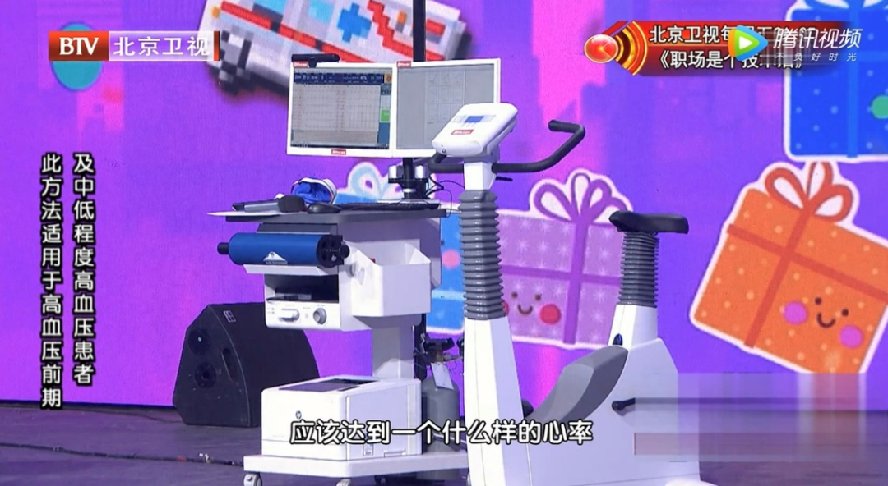
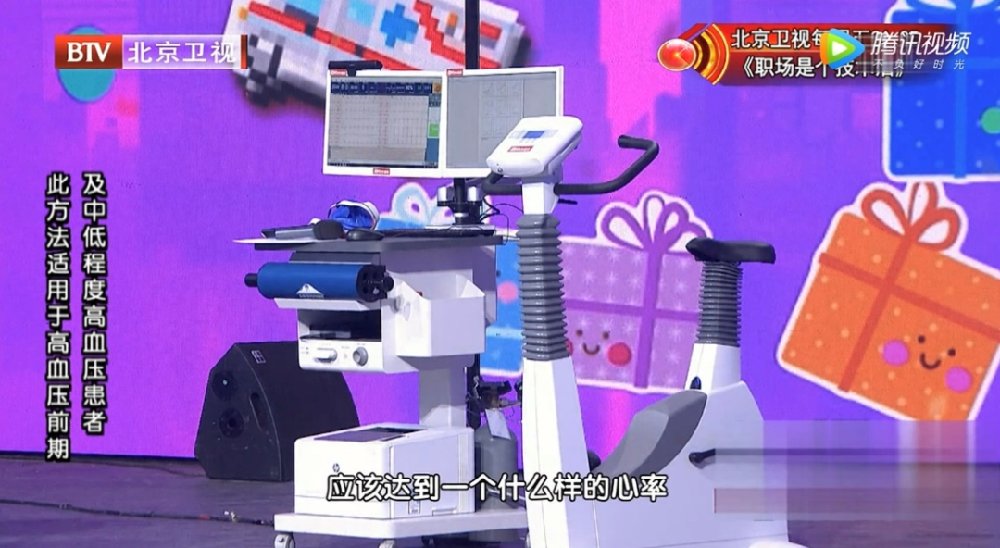

远健动态
2019年中国心血管健康与疾病报告最新统计，大于18岁的成年人高血压患病率27.9%。我国成年人中每4个人就有1个高血压患者，是影响我国居民心血管健康的头号健康大敌。
在2020年5月国际高血压学会制定了世界范围内使用的最新版ISH2020国际高血压实践指南，正式发布。
《ISH2020国际高血压实践指南》中指出：改善生活方式已经成为第一线的降压治疗手段。

来自北京大学人民医院心血管内科的丁荣晶主任给我们讲讲有效逆转高血压的“新处方”。

丁荣晶 副主任医师 北京大学人民医院 心血管内科

“新处方”多久有效果
“降压的“新处方”维持3-6个月，一次的治疗后，一个小时左右，实现5-10毫米汞柱的高压下降，3-5毫米汞柱的低压下降 。根据患者情况会让药物减掉或者不用吃药。

“定制“新处方”——心肺运动负荷试验
“高血压患者血压：高压：147mmhg 低压：109mmhg


“开“新处方”前做一个重要的测试——心肺运动负荷试验。
观察患者的活动状态以及血压、心率、心血管的反映情况，根据患者的反映情况量身定制“新处方”，帮助患者在日常生活中会降压。

心肺运动负荷试验是一项重要的检查。
日常生活中，人们在不了解自己的情况下活动时，风险更大。进行心肺运动负荷试验后，了解自己身体能接受的强度，在日常生活中是可控心血管的风险。
 

"配有遥测运动心电及血压的高度自动化心肺评测系统（CPX）。"
主要适用于心内科、呼吸科、康复科等需要进行心肺功能测定和康复的患者，以及各种需要心肺功能评测指导下的身体康复的患者。
流速、容量测试
一口气法气体成分分析（VO2， VCO2）
静态/动态肺功能测试
静态/运动心电图测量及分析
基础/营养代谢测定及分析
运动血压测量和监控
血氧饱和度测量和监控
无创心排量测量（Wasserman）
辅助分析流程
ACSM运动处方
多维度数据导出
精准测量、高度可靠
-快反应气体成分分析
-专利设计流量传感器
易学易用
-多维导航
-一键自动定标
-智能辅助
全周期（早、中、后期）适用
无线分立的数据采集
紧凑型、可穿戴式设计
国际权威的美国心脏协会（AHA）
美国胸科协会（ATS）
美国胸科医师协会（ACCP）
美国运动医学会（ACSM）
高血压患者进行心肺运动负荷试验后：
高压：190mmhg 低压：114mmhg 心率：115次每分 呼吸急促、微汗

打印报告，量身定制“降压运动处方”

患者达到了最大运动耐力，在达到最高运动强度时，血压：190mmhg。
患者的运动状态血压应激反应特别明显。
没有高血压的个体在运动中，血压上升，意味着有患高血压的高度风险。

根据高血压患者个人身体情况定制：
有氧运动、蹬车交替，每天30分钟
心率90-100分/次 每周7天